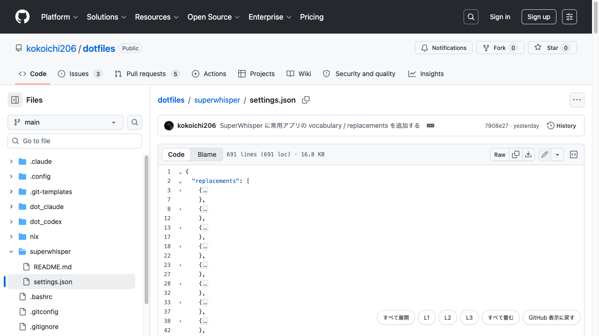

Foldable View for GitHub
Code folding for the GitHub file view: fold by indent, collapse to a
chosen depth.

What it does
-
Folds by indentation, so it behaves the same in Go, Python, YAML, JSON,
Markdown, and anything else that expresses structure through
indentation.
-
L1 / L2 / L3 collapse the entire file to a chosen depth in one click.
- Syntax highlighting chosen from the file extension.
- Follows GitHub's light and dark themes.
-
On pull request "Files changed" pages, switch any file from the diff to
its full source with the changed lines highlighted, then fold it.
Links